키프레임 추출 — 여섯 판 검토
2026-09-08 · 공장4 추출기로 각 판 243프레임을 «전수» 재고 뽑았습니다 · 추가 집행 $0
어떻게 뽑았나
공장4가 만든 추출기(kf_extract_lab.py)가 판마다 243프레임을 전부 재고,
① 쓸 수 있는가(눈 감음·얼굴 가림·잘림) ② 서로 겹치지 않는가(축 2개 이상)로 걸러 냅니다.
■ 쓸수있다 ■ 눈감음 ■ 자가못잼(고개 젖힘·측면에서 검출 실패 — 반려가 아닙니다)
🥇 오늘 고친 문구가 숫자로 나왔습니다
| 같은 회차·같은 여자 | 눈 감음 | 쓸 수 있다 |
|---|---|---|
| T11_ANG01 옛 문형 「눈을 뜨고 노래한다」 | 37장 | 56장 |
| T11_ANG02 새 문형 「눈을 뜨고, 입은 다문다」 | 0장 | 177장 |
정본 둘이 부딪히고 있었습니다 — §1-y 는 「노래한다」를,
PERFORM §7 은 「참조의 입은 다문다」를 요구했습니다. 눈과 입은 다른 축이라 갈라 적으니
눈 감음이 사라지고 쓸 수 있는 프레임이 3배가 됐습니다.
T11 한화 · 여자옛 문형 — 「눈을 뜨고 «노래한다»」
243프레임 전수 — 자가못잼 150 · 쓸수있다 56 · 눈감음 37 → 채택 11장


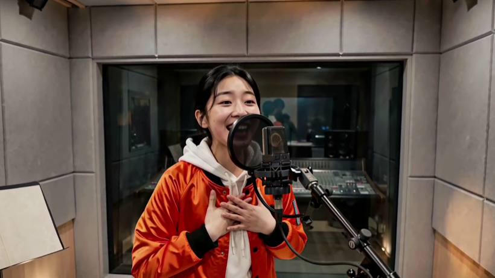
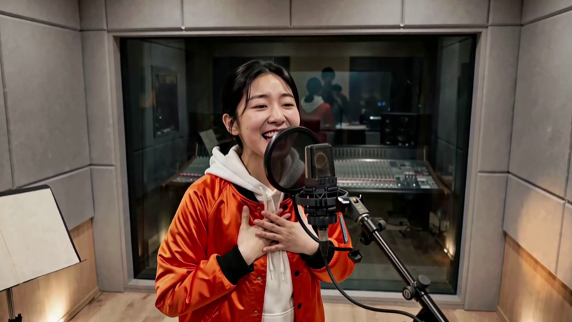

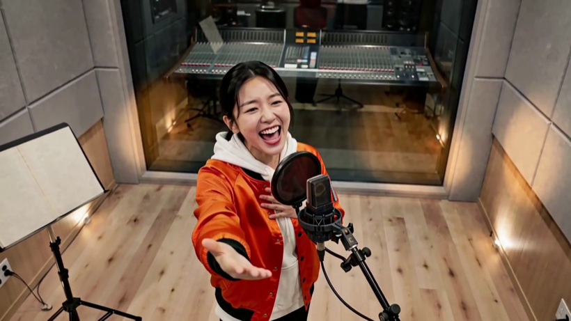
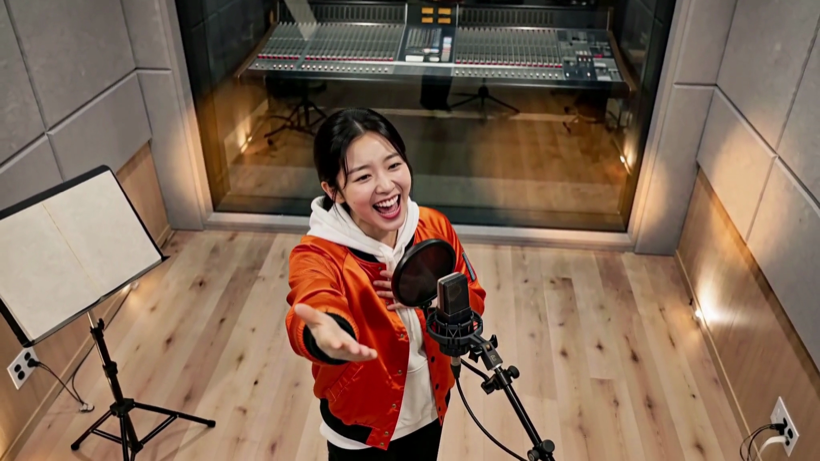
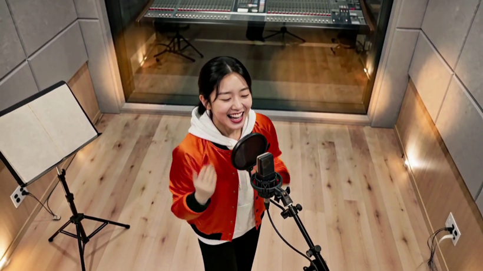
T11 한화 · 여자🆕 새 문형 — 「눈을 뜨고, 입은 «다문다»」
243프레임 전수 — 쓸수있다 177 · 자가못잼 66 → 채택 12장


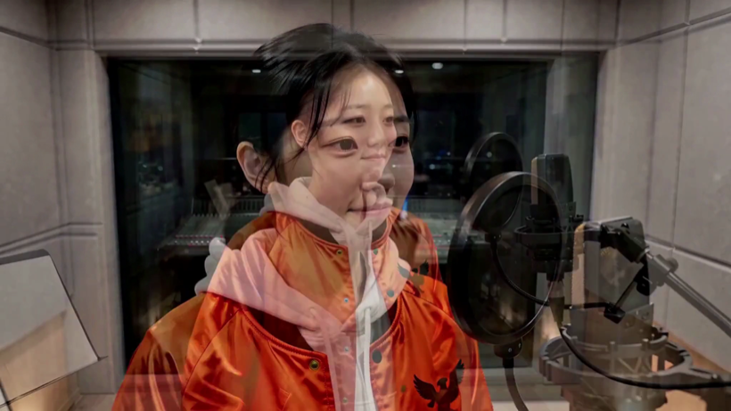

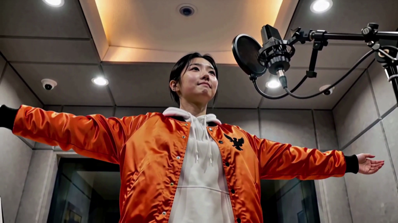

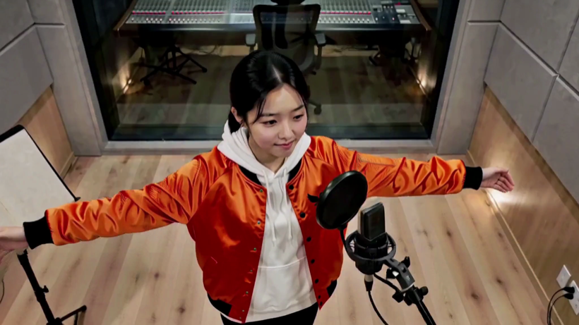
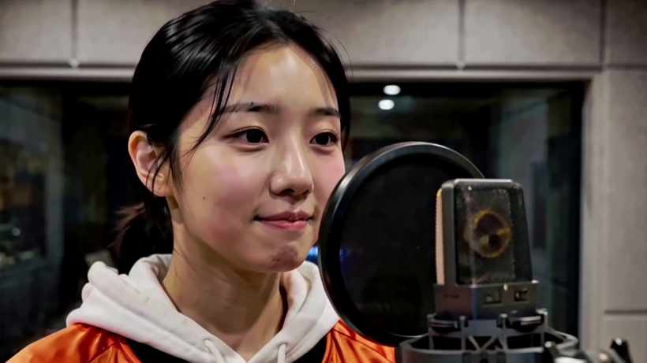

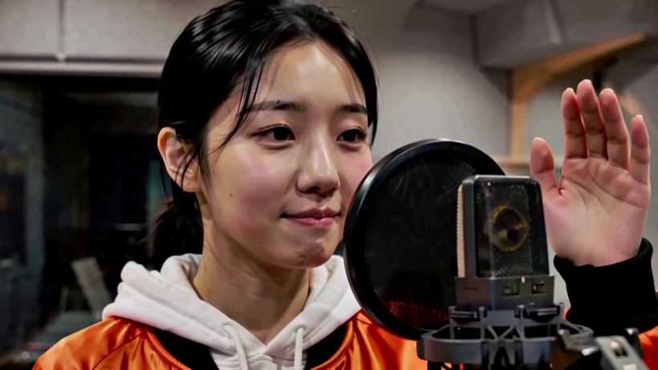
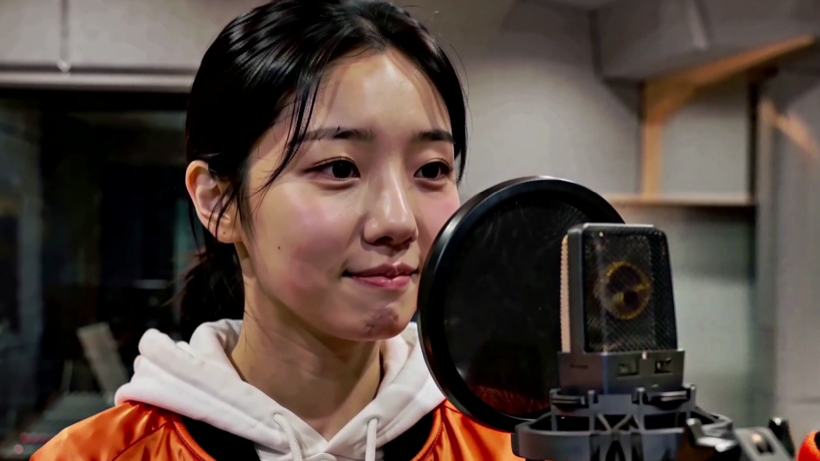
T11 한화 · 남자🆕 새 문형 · 마이크 왼쪽
243프레임 전수 — 자가못잼 192 · 쓸수있다 51 → 채택 11장
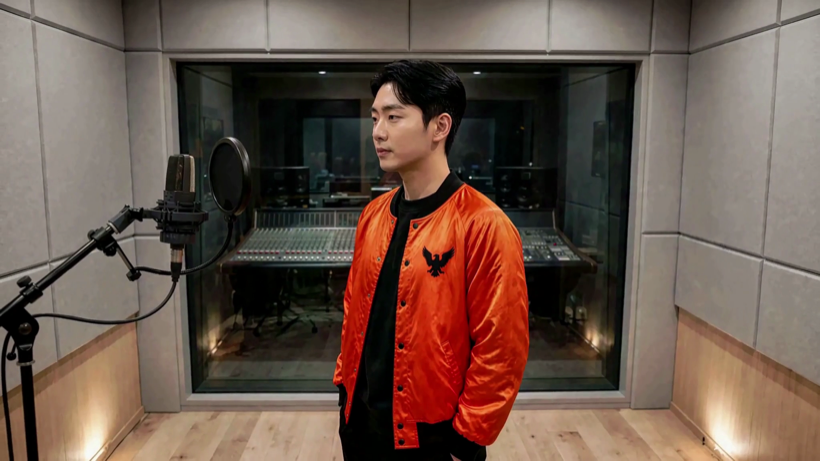


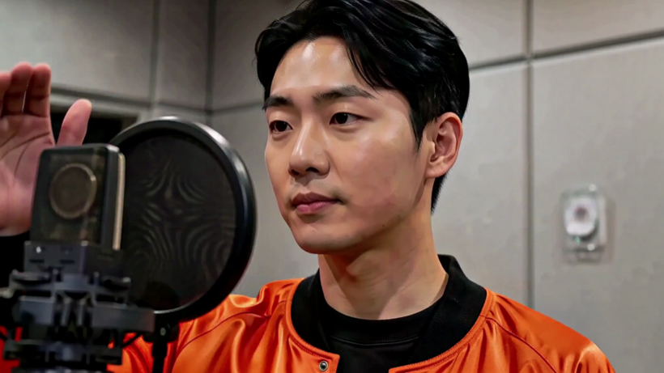
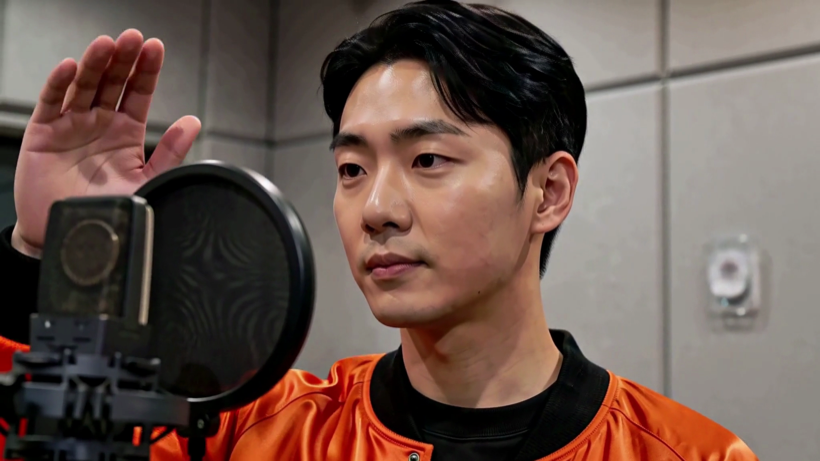


T15 · 여자옛 문형
243프레임 전수 — 자가못잼 170 · 쓸수있다 73 → 채택 11장


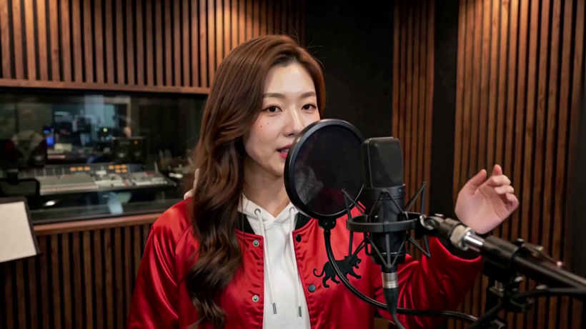


T15 · 남자🆕 새 문형 · 마이크 왼쪽
243프레임 전수 — 자가못잼 178 · 쓸수있다 64 · 눈감음 1 → 채택 11장


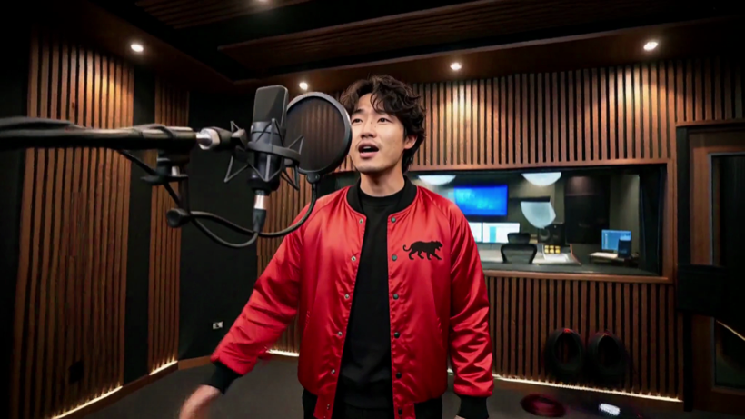
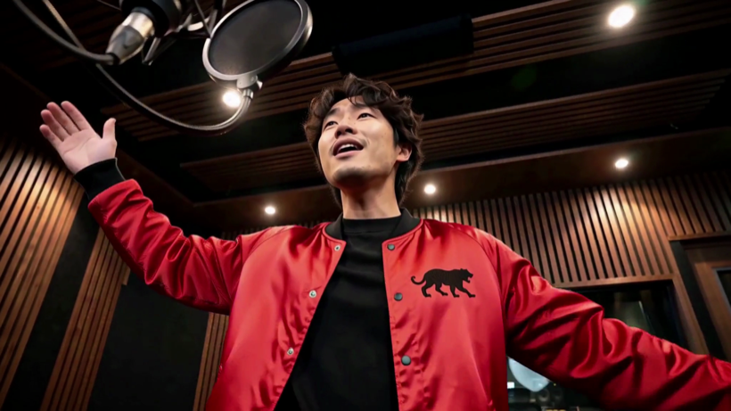
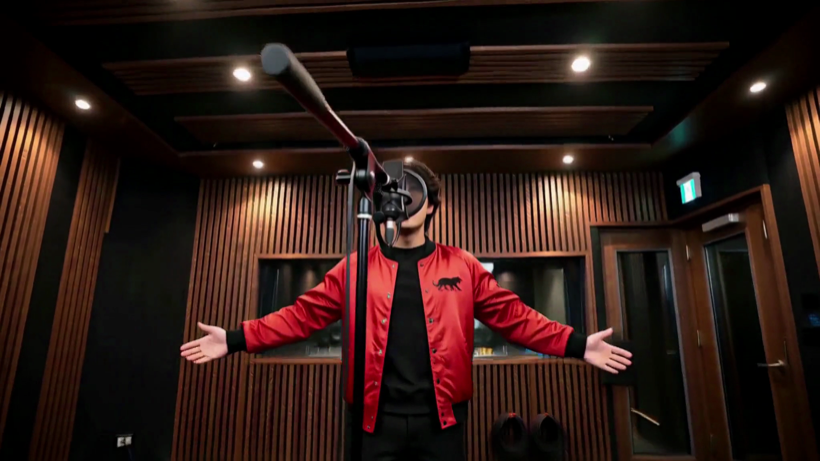

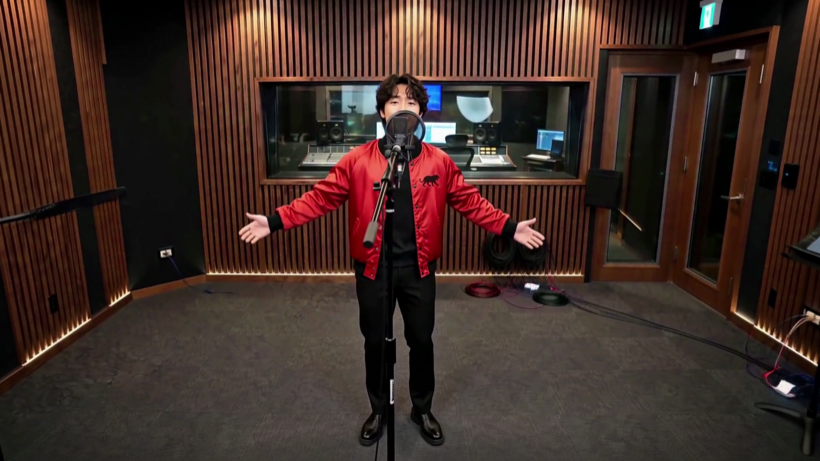


T18 · 남자옛 문형
243프레임 전수 — 쓸수있다 132 · 자가못잼 111 → 채택 11장
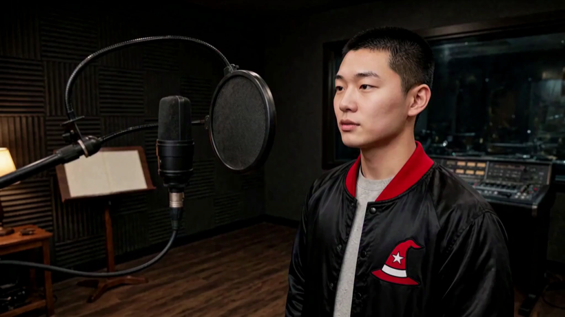


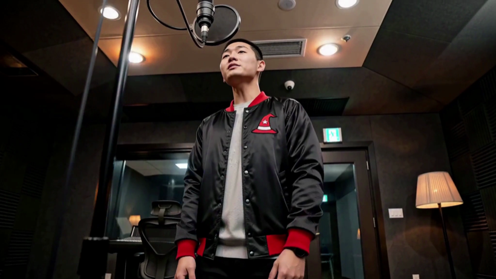
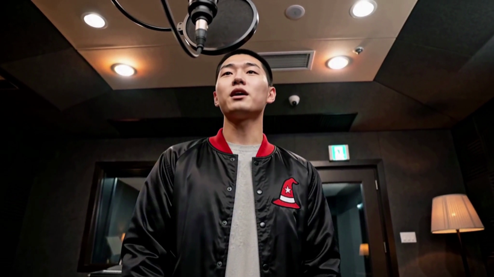

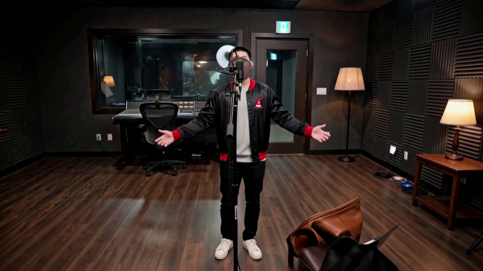
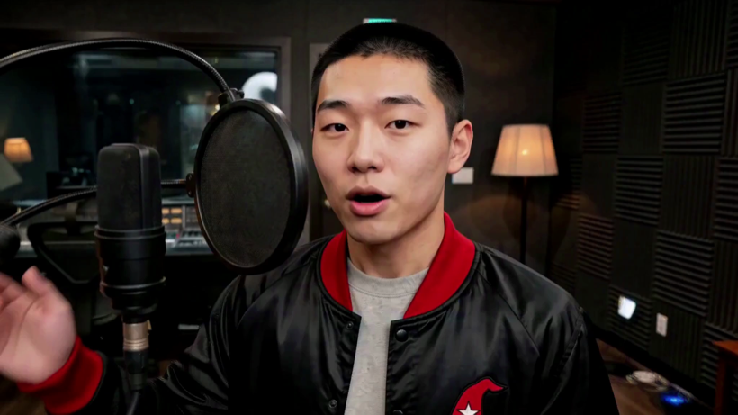
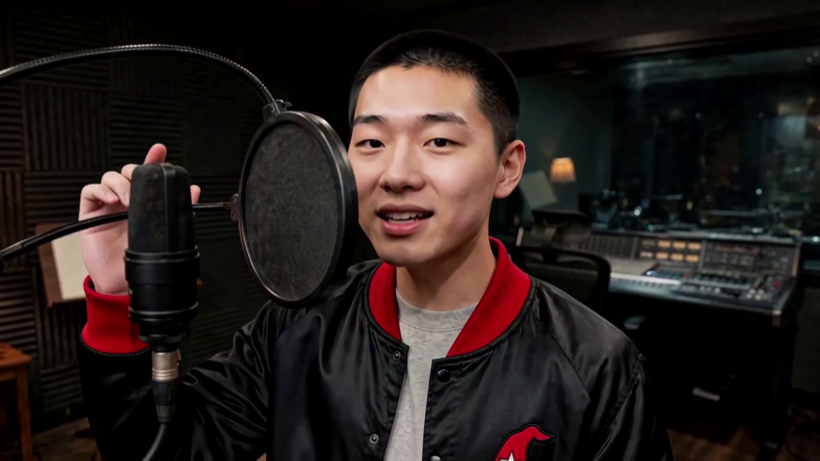

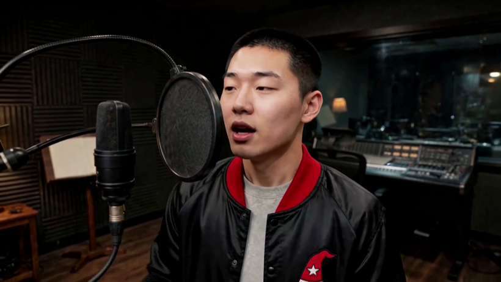
🔬 같은 문형인데 판마다 다르게 나옵니다
| 판 | 하드컷 | 나온 것 |
|---|---|---|
| T15 여 | 2개 | 셋업 셋 |
| T18 남 | 3개 | 셋업 넷 |
| T11 여 | 0개 | 한 덩어리 |
| T11 남 | 3개 | 셋업 넷 |
같은 시각·같은 LOCKED OFF 문장을 줬는데 0~3번이 나옵니다.
⇒ 이 문형은 「몇 번 갈라라」를 지정하지 못합니다. 다만 갈린 셋업끼리는 각도가 확실히 달라
채취에는 오히려 깨끗합니다.
🔴 아직 안 풀린 것
- 화각이 넓어지면 방 목록 밖 물건이 나옵니다 — 여자 3.25초 천장 돔카메라·매입등, 남자 5.21초 벽 콘센트.
발주문에
FRAME COVERAGE문장을 넣었는데도 났습니다. 표본 넷입니다. - 추출기는 「후보 추리기」지 「최종 채택기」가 아닙니다 — 「자가못잼」이 절반 안팎입니다. 고개를 젖히거나 측면이면 검출이 실패하는데, 그 장이 정확히 우리가 원하는 각도입니다. 그래서 반려가 아니라 사람이 봅니다.
대표님께 여쭐 것
- 판마다 쓸 번호를 골라 주십시오. 판 이름과 번호만 주시면 됩니다.
- 이 여덟 판(남녀 각 넷)으로 컷 참조를 갈아 끼울지 — 지금 컷들은 각도가 하나인 옛 참조를 물고 있습니다.